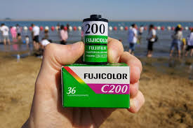

Cele trei fenomene necesare obținerii imaginilor fotografice sunt cunoscute de mult timp:
Joseph Nicéphore Niépce, un fizician francez, a folosit toate aceste trei proceduri pentru a fixa o imagine pe o plăcă metalică cu depunere de halogenură de argint (1829). Rezultatul a avut o calitate medie. Niépce a murit în 1833, dar invenția sa a fost recuperată de către Louis Daguerre. Din acest motiv, data oficială a invenției fotografiei este 1839, când Daguerre a prezentat invenția numită de el „daghereotip”, care este o simplă ameliorare a descoperirii făcute de Niépce. Proprietar al invenției a devenit statul francez.
Grație daghereotipiei se obține o matriță a mediului pe o placă metalică tratată cu o substanță fotosensibilă , după o expunere de "doar" 8 ore (când cerul este complet senin). Copierea se făcea prin presarea matriței pe suportul de hârtie, ca și la orice tipărire a ziarelor.
| Această expunere lentă aduce cu sine câteva probleme: străzile Parisului, chiar și la o oră de vârf, apar în întregime goale. Tehnica va avansa însă rapid, noua invenție făcând să apară și o nouă meserie, aceea de fotograf, căutată în special de ziarele vremii. | |
|---|---|
| Prima experiență foto a lui Niépce |
|  | Dacă la început negativul se realiza pe o placă de cristal, pentru a nu avea deformări, placă foarte casabilă și care cerea o manipulare deosebită, prin dezvoltarea artei fotografice a apărut necesitatea unui suport fotosensibil mai ușor de manipulat decât cristalul.George Eastman reușește în anul 1884 să realizeze primul negativ flexibil, pe un suport de nitroceluloză, cunoscut sub denumirea de "roll film", ușor de manipulat, incasabil și cu aceleași proprietăți fotografice ca și ale plăcii de cristal. Totodată, volumul și greutatea aparatului de fotografiat se micșorează considerabil, transportarea lui nemaifiind o problemă. |
|---|---|
| Rolă de film |
Ideea de fotografie color a circulat încă de la apariția invenției. Primele experimente fotografice în culoare nu au avut succes, astfel de exemplu nu s-a putut împiedica decolorarea fotografiilor. Prima fotografie cu culori permanente a fost făcută în 1861 de fizicianul James Clerk Maxwell.
| Primul sistem color, Autochrome Lumière, a apărut pe piață la 17 decembrie 1903. Acesta era un sistem de fotografie color transparentă. Fotografierea se făcea pe trei plăci fotografice alb/negru cu substanțe cromatice sensibile numai la culorile roșu, verde și albastru. Apoi cele trei fotografii transparente rezultante se suprapuneau, dând o fotografie color transparentă. Pelicula color de tip Kodachrome a apărut în 1935 și s-a bazat pe emulsii tricromatice. Majoritatea peliculelor color moderne, cu excepția "Kodachrome", se bazează pe o tehnologie dezvoltată de compania germană Agfa în 1936. | |
|---|---|
| Fotografie color prin sistemul "autochrom" |
Fotografierea tradițională a fost dificilă pentru fotografii ce lucrau departe de sediu (precum corespondenții de presă din străinătate), fără acces la facilități de procesare și transmitere. Pentru a ține pasul cu popularitatea crescândă a televiziunii, aceștia au făcut tot posibilul pentru a trimite imaginile lor la ziar cât mai repede. Fotojurnaliștii trimiși în locații distante trebuiau să își ia cu ei un mini-laborator foto și un aparat pentru cuplarea la liniile de transmitere a imaginilor. În 1990, compania Kodak a prezentat publicului DCS 100, primul aparat de fotografiat digital disponibil în comerț. Prețul său ridicat indica o utilizare numai în fotojurnalism și aplicații profesionale, dar încetul cu încetul și ramura digitală a fotografiei a devenit disponibilă în comerț. În decurs de 10 ani aparatele de fotografiat digitale au devenit articole de consum uzuale. La ora actuală, răspândirea lor pe glob a depășit de mult predecesorul lor tradițional, deoarece prețul componentelor electronice scade permanent iar simultan se îmbunătățește și calitatea imaginilor digitale. În ianuarie 2004 Kodak a anunțat că nu va mai produce aparate foto reîncărcabile cu film de 35 mm începând de la finalul anului.
Principalele metode de fotografie digitală, aparatul foto și telefonul mobil: